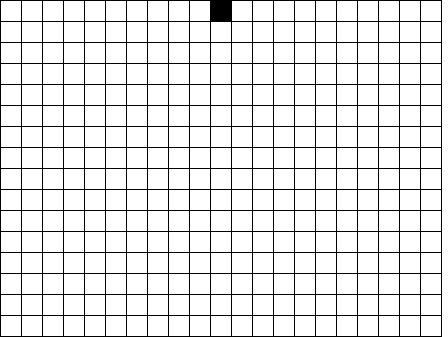

Using this rule and the first generation shown in the first row below, determine the successive generations for this CA. Before doing this, look at the results of the first two exercises and guess the outcome of this exercise.
|  |
Here is the answer.
Return to Cellular Automata Explorations.